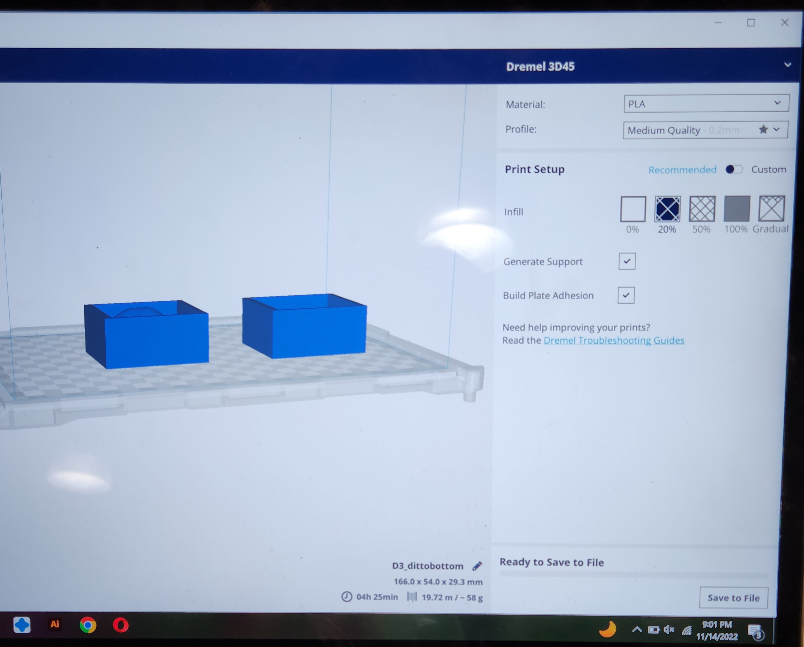
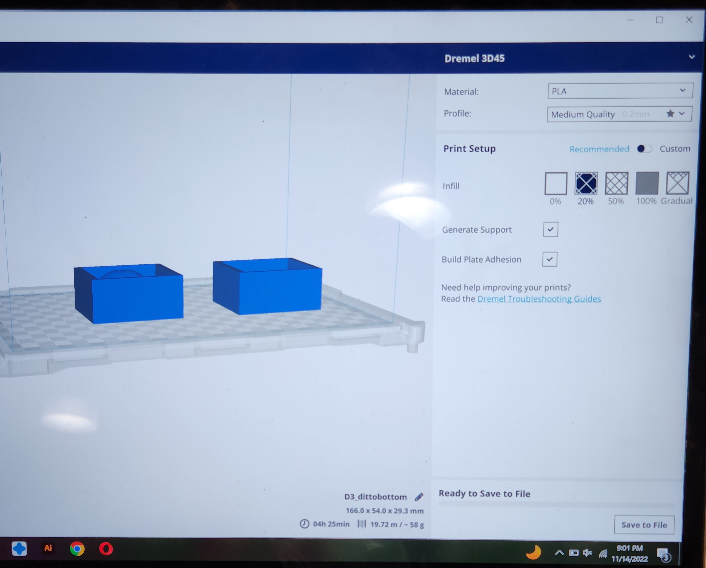

Lamps part 2! And molding and casting part 1!
Part 1: Final version of lamp
As continuation of last week, I reattempted scaling the whale and making a hole for the lightbulb to fit. This time, I made the whale STL file into a polysurface first when I imported it. Before I did it, Rhino was giving me warning msgs the file is too big and my computer might crash, so I quad-remeshed a few times before running the MeshtoNURB command. After that, I was able extrude a cylinder and finally run the boolean commands I was not able to run last week. After I made the hole in the polysurface, I scaled it up for the hole.
As shown in the screenshot, when I exported and imported to Cura, it was going to take around 13 hours to print. From there, I decided to scale back to a simple lightbulb holder, so it only takes me around 2 hours to print. Since the printer at home is not very functional, I went to the Mill to print using the Dremel printer. One of the Prusa's was also down.

Here's my finished lamp. If I had more time, I would've built the walls taller and made more holes to cover up the lightbulb head and allow some lights to come through the holes, but for right now it's a lightbulb holder. As you can tell it didn't completely print correctly either. I'll try Prusa next time when it's available to use.
Source files Part 1
Part 2: Molding and casting (pt 1/2)
For my mold for mold, I wanted to do something cool for once, so I looked on Thingiverse for something cute...and found Ditto. I started out by downloading the STL from Thingiverse and quad-remeshed a lot of times before turning him into a polysurface. In order to cut Ditto in half. I used a thin layer of a rectangular plane (0.01mm) to cut with Booleansplit. From there I struggled with getting it in the right position in the mold. I wanted to make sure he's perfectly aligned, so when the keys are lining up, both parts of Ditto would fit. This took a few trial and error because I kept ending up with a half of him facing the wrong side. I used mirror on the Y axis to make sure all the parts are in the exact place when put together.
What I struggled with next is making the extra 'layer' that would hold the oomoo. I ended up creating a bigger rectangle to hug the pieces, extruded it, then boolean-differenced another extruded rectangle out.
 

For some reason at the time the 3 Dremel printers I tried to use were all not working, so the Mill staff and I spent around 3+ hours trying to troubleshoot. The 4th one seemed to be working (this was past 10:30), so I left the print job to run over night. I'll be stopping by the next day to check on the print, but here's what it looked like when I was printing.
Source files Part 2
Acknowledgement--thanks everyone!
- Professor + Classmate thread on discord
- Jisu for teaching me MeshtoNURB
- Mill staff on shift 11/13-14 nights